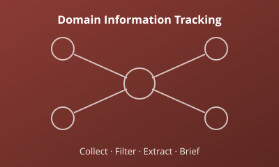

Domain Information Tracking & Processing
An end-to-end pipeline for tracking domain information: data collection, review and correction, dynamic selection, keyword extraction, and automatic briefing generation, deployed with Docker and front/back-end separation.
- Python
- Elasticsearch
- MySQL
- Docker
- Vue.JS
- FastAPI